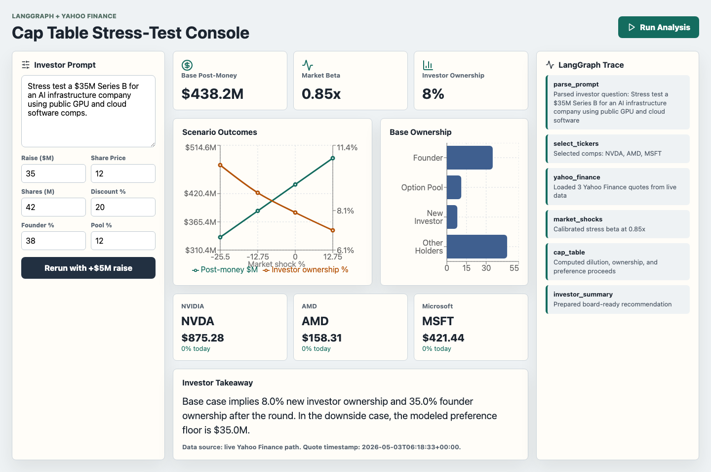
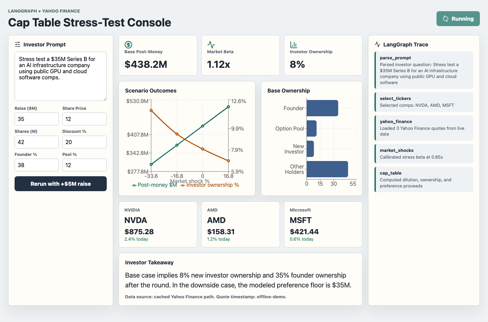

First-principles introduction for agent builders
LangGraph Introduction with a Finance Example
Learn the core LangGraph building blocks first, then see how they turn an investor prompt into market comps, scenario math, cap table impact, and an auditable execution trace.
LangGraph basics
Finance state
Nodes + edges
Traceable execution
Investor UI
LangGraph basics
What is LangGraph?
Input
→
Node
→
Node
→
Result
from langgraph.graph import StateGraph
graph = StateGraph(FinanceState)
graph.add_node("parse_prompt", parse_prompt)
graph.add_node("select_tickers", choose_tickers)
graph.add_edge("parse_prompt", "select_tickers")LangGraph is a way to build agents as explicit workflows: named steps, connected paths, and shared state.
LangGraph basics
What is a node?
State in
→
parse_prompt
→
State out
def parse_prompt(state):
state["assumptions"] = normalize_inputs(state)
return state
graph.add_node("parse_prompt", parse_prompt)A node is one named unit of work.
LangGraph basics
What kinds of work can go inside a node?
Parse a prompt
Call a tool
Run math
Ask an LLM
Review risk
Write output
def load_market_data(state):
quotes, source = fetch_quotes(state["tickers"])
state["quotes"] = quotes
state["dataSource"] = source
return state
graph.add_node("yahoo_finance", load_market_data)A node can run normal code, call tools, ask a model, or apply business rules.
LangGraph basics
What is an edge?
parse_prompt
→
select_tickers
graph.add_node("parse_prompt", parse_prompt)
graph.add_node("select_tickers", choose_tickers)
graph.add_edge(
"parse_prompt",
"select_tickers",
)An edge says what runs next.
LangGraph basics
What is a conditional edge?
Check confidence
high→
Live data
low→
Cached data
graph.add_conditional_edges(
"check_confidence",
route_data_source,
{"live": "yahoo_finance",
"cache": "cached_quotes"},
)A conditional edge chooses the next node based on state.
LangGraph basics
How nodes compose into a graph
Prompt
→
Comps
→
Quotes
→
Cap table
→
Summary
graph.set_entry_point("parse_prompt")
graph.add_edge("parse_prompt", "select_tickers")
graph.add_edge("select_tickers", "yahoo_finance")
graph.add_edge("yahoo_finance", "cap_table")
graph.add_edge("cap_table", END)
finance_graph = graph.compile()A graph is the whole workflow: nodes plus the paths between them.
LangGraph basics
Example graph configurations
def route_risk(state):
if state["valuation_change"] > 25:
return "human_review"
return "summary"
graph.add_conditional_edges(
"risk_check",
route_risk,
)Graph shape follows the operating process you want the agent to obey.
LangGraph basics
What is graph state?
promptinvestor ask
tickerspublic comps
quotesmarket data
scenariosmodel outputs
summarytakeaway
traceaudit trail
class FinanceState(TypedDict, total=False):
prompt: str
assumptions: dict
tickers: list[str]
quotes: list[dict]
scenarios: list[dict]
summary: strState is the shared working memory passed through the graph.
LangGraph basics
How state changes as it passes through nodes
Startprompttickersquotessummary
→
Middleprompttickersquotessummary
→
Endprompttickersquotessummary
state = {"prompt": user_prompt}
state = parse_prompt(state)
state = choose_tickers(state)
state = load_market_data(state)
state = summarize(state)Each node receives the current state, adds its work, and passes the updated state forward.
Audience frame
Investors do not just need a chatbot
Finance agents need durable steps: parse the ask, choose data sources, fetch or fall back, calculate, summarize, and show what happened. LangGraph makes that workflow explicit.
This demo uses a cap table stress-test because it has the shape real investors care about: market signal, assumptions, deterministic math, and a decision-ready output.
- Every node has one job.
- State carries facts between nodes.
- Tools are isolated from valuation logic.
- The UI streams progress for auditability.
Finance primer
The terms this demo is calculating
In this demo, public-market shocks change the implied valuation. The graph then shows how that changes ownership, dilution, and investor proceeds.
Graph mental model
A finance agent is a workflow, not one prompt
Investor prompt
Parse
Comps
Quotes
Scenarios
Cap table
Summary
Decision dashboard
Each box is a Python function. LangGraph controls the order, passes shared state, and gives us a clean place to add branches later: approvals, human review, alternate data vendors, or memo generation.
Step 1: define shared state
The graph state is the agent's working memory
class FinanceState(TypedDict, total=False):
prompt: str
assumptions: dict
tickers: list[str]
quotes: list[dict]
dataSource: str
marketBeta: float
scenarios: list[dict]
summary: str
trace: list[dict]FinanceState
Prompt
investor ask
investor ask
Market
tickers + quotes
tickers + quotes
Model
scenarios
scenarios
Output
summary + trace
summary + trace
State before and after
The declaration becomes a populated deal file
prompt
assumptions
tickers
quotes
marketBeta
scenarios
summary
trace
→
prompt: Series B stress-test
assumptions: $35M raise
tickers: NVDA, AMD, MSFT
quotes: live/cached comps
marketBeta: scenario sensitivity
scenarios: 4 cap table cases
summary: investor takeaway
trace: node audit trail
Step 2: write small node functions
Each node reads state, writes state, returns state
def choose_tickers(state: FinanceState) -> FinanceState:
state["tickers"] = select_tickers(state["prompt"])
return _trace(
state,
"select_tickers",
f"Selected comps: {', '.join(state['tickers'])}",
)
def load_market_data(state: FinanceState) -> FinanceState:
quotes, source = fetch_quotes(state["tickers"])
state["quotes"] = quotes
state["dataSource"] = source
return _trace(state, "yahoo_finance", "Loaded quotes")Read state
↓
Do one finance job
↓
Write state
No UI. No charting. No hidden valuation magic. Just a testable business step.
Step 3: compile the graph
LangGraph wires the finance workflow
graph = StateGraph(FinanceState)
graph.add_node("parse_prompt", parse_prompt)
graph.add_node("select_tickers", choose_tickers)
graph.add_node("yahoo_finance", load_market_data)
graph.add_node("market_shocks", model_scenarios)
graph.add_node("cap_table", run_cap_table_node)
graph.add_node("investor_summary", summarize)
graph.set_entry_point("parse_prompt")
graph.add_edge("parse_prompt", "select_tickers")
graph.add_edge("select_tickers", "yahoo_finance")
graph.add_edge("yahoo_finance", "market_shocks")
graph.add_edge("market_shocks", "cap_table")
graph.add_edge("cap_table", "investor_summary")parse_prompt→select_tickers
select_tickers→yahoo_finance
yahoo_finance→market_shocks
market_shocks→cap_table
cap_table→summary
Edges are the operating model. Branches can be added where business policy changes.
Step 4: isolate market data tools
Live Yahoo Finance, deterministic fallback
def fetch_quotes(tickers: list[str]) -> tuple[list[dict], str]:
try:
import yfinance as yf
quotes = []
for ticker in tickers:
info = yf.Ticker(ticker).fast_info
quotes.append(normalize_quote(ticker, info))
return quotes, "live"
except Exception:
return cached_quotes(tickers), "cached"NVDAAMDMSFT
Live path
Yahoo Finance via `yfinance`
Fallback path
Cached sample comps
The graph records `dataSource`, so the investor knows which path produced the analysis.
Step 5: keep finance math deterministic
The LLM should not improvise cap table math
def run_cap_table(inputs, market_shock_pct):
shocked_price = inputs.current_share_price * (
1 + market_shock_pct / 100
)
pre_money_m = shocked_price * inputs.existing_shares_m
discounted_pre_m = pre_money_m * (
1 - inputs.valuation_discount_pct / 100
)
post_money_m = discounted_pre_m + inputs.raise_amount_m
investor_pct = inputs.raise_amount_m / post_money_m * 100
return {"postMoneyM": post_money_m,
"investorOwnershipPct": investor_pct}Market shock
×
Share price
=
Pre-money
Raise amount
÷
Post-money
=
Investor %
The agent orchestrates. Deterministic functions calculate.
Step 6: stream the graph trace
Show investors how the agent got there
@app.post("/analyze/stream")
async def analyze_stream(request):
for update in finance_graph.stream(initial_state):
node, state = next(iter(update.items()))
trace_item = state["trace"][-1]
yield sse({
"type": "trace",
"node": node,
"trace": trace_item,
})
yield sse({"type": "result", "result": state})parse_prompt complete
select_tickers complete
yahoo_finance running
cap_table waiting
Trace events become the visible audit trail in the dashboard.
Investor-facing surface
The dashboard maps graph state to decisions

Trace visibility
The audience sees the graph execute

Verification
Prompt, run, result, rerun
How to extend this for real funds
Where builders take it next
Takeaway
LangGraph is the control plane for finance agents
- Use graph state for facts the workflow must preserve.
- Use nodes for testable business steps.
- Use tools for external data and keep fallbacks explicit.
- Use deterministic functions for financial calculations.
- Use streaming traces so investors can trust the path, not just the answer.
Terminal
open http://127.0.0.1:5173
Demo for education only. Not investment, legal, tax, or accounting advice.